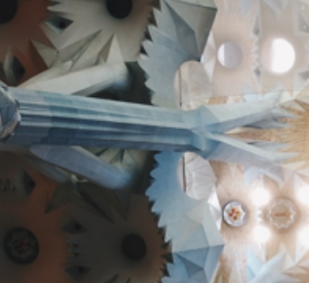
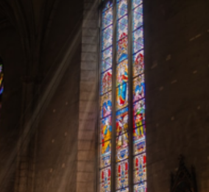

In front of a pile of ornate sculptures, one of the most prominent is a cyan mottled human figure with a necklace and a focused gaze.

Clue
The dome of the church is very ornate, studded with flower shapes and lights. Sky-blue columns also studded with lights run from the ground to the dome.

Clue
Inside the cathedral, the deep walls have beautiful flowered Windows, printed with colorful classical figures. Sunlight streams in through the window and falls on the bench.
Jarrett Cawsey | Hider
I am aware that most people know about this famous cathedral, but I would like to recommend some less well-known but very nice corners.
Iraj Pirdoost | Editor
A very well-designed and artistic cathedral, filled with a sense of holiness and tranquility. Despite its fame, there are still many charming corners that you may not have noticed.